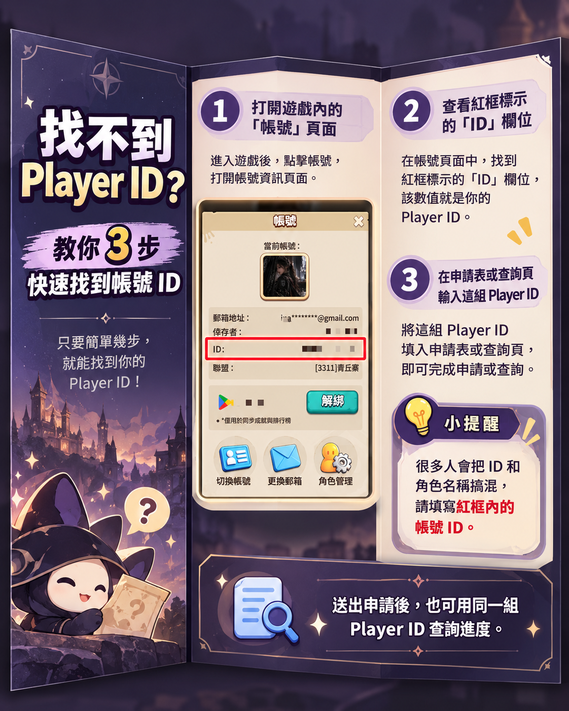

STATE 618 · MIGRATION
Check Application Status
查詢申請進度
Enter your Player ID to check the latest status of your migration request.
輸入 Player ID，即可查看目前的審核進度。
找不到 Player ID？ / Where can I find it?
打開遊戲內的「帳號」頁面，找到標示為「ID」的欄位；紅框中的數字就是 Player ID。
Open the in-game Account page and look for the row labeled “ID”.

點圖片可放大查看 / Click the image to enlarge.
Use your Player ID to check your application status. No separate application number is required.
送出申請後，可直接使用 Player ID 查詢進度；請耐心等候專人通知。若有指定聯盟，後續將由該聯盟管理人員進行審核與聯繫。
STATUS · 申請狀態